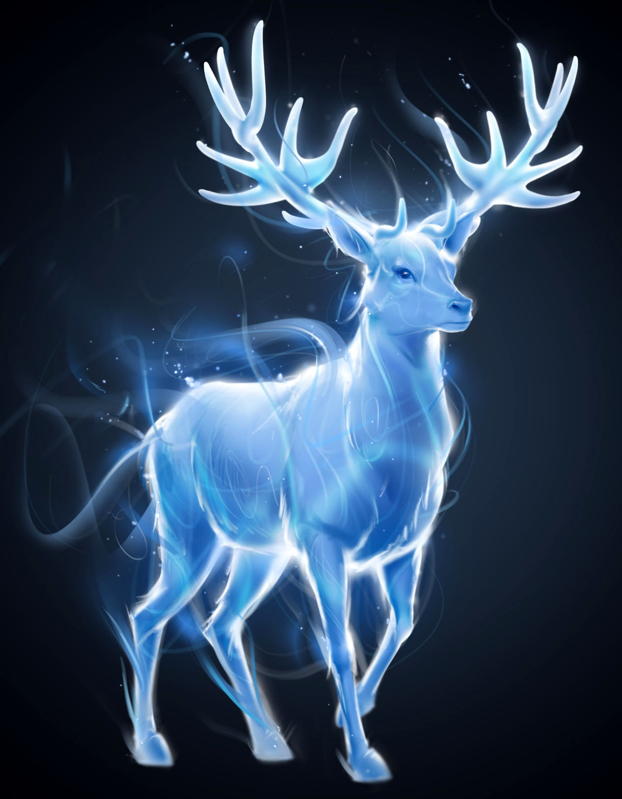

Jelen je bio patronus Harry Potter-a.Jeleni su veoma mudre i oprezne zivotinje. Takodje su veoma i pametne. Znaju da, kada primete protivnika
upozore ostale i samim tim se spasu. Ovaj patronus je tako i odlika veoma opreznih i mudrih ljudi. Jelena kao patronus takodje su imali Harry, njegov otac
, njegova majka, Severus Snape i mnogi drugi veliki carobnjaci. I u tebi se krije veliki carobnjak! A sada samo napred i iskoristi svoj patronus. Expectoooooooooooo patroooooooooonuuum!